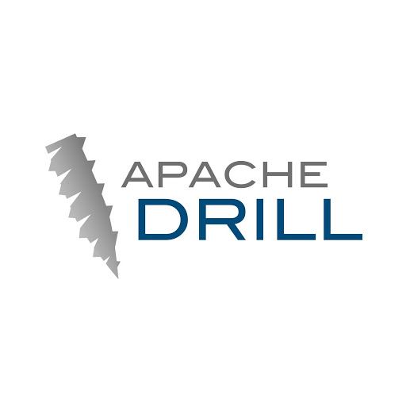
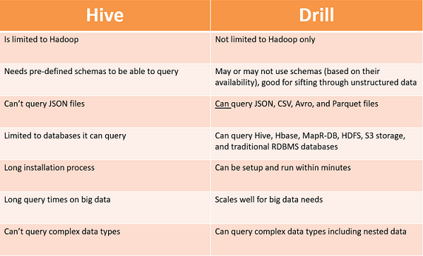

APACHE DRILL PILOT PROGRAM
OVERVIEW

As my main project during my internship at Optum – UnitedHealth Group, my partner and I were
tasked to find efficient alternatives for querying on Optum’s Data Lake. Current querying
procedures on Apache Hive ran upwards of hours for some commonly used join queries.
Over the course of this project, I developed my proficiency in writing SQL queries as
well as my communication within a larger corporation.
- Spearheaded the Apache Drill Pilot Program for big data analytics and data extraction against various databases including Hbase, HDFS, MAPRfs, and relational database management systems
- Developed and tested over 90 SQL queries for use with Apache Drill while documenting resource metrics
- Assessed and implemented effective query plan optimizations by finding efficient methods for data extraction
PROCEDURES

The Data Lake is home to billions of user records, and the querying system at the time – Apache
Hive – was inefficient with these large queries. After researching alternatives such as Apache Pig
and Apache Spark, we concluded that Apache Drill would be the most beneficial tool. We wrote over
90 SQL queries in both Hive and Drill to compare their performances. Though we mainly focused on
JOIN queries, we tested on all of the SQL features listed below.
RESULTS

We concluded that Drill performed better than Hive on memory intensive tasks like JOIN or ORDER BY
queries. Drill successfully ran these queries in 1/7th the time that Hive did, yielding time-efficient
and accessible data to users.